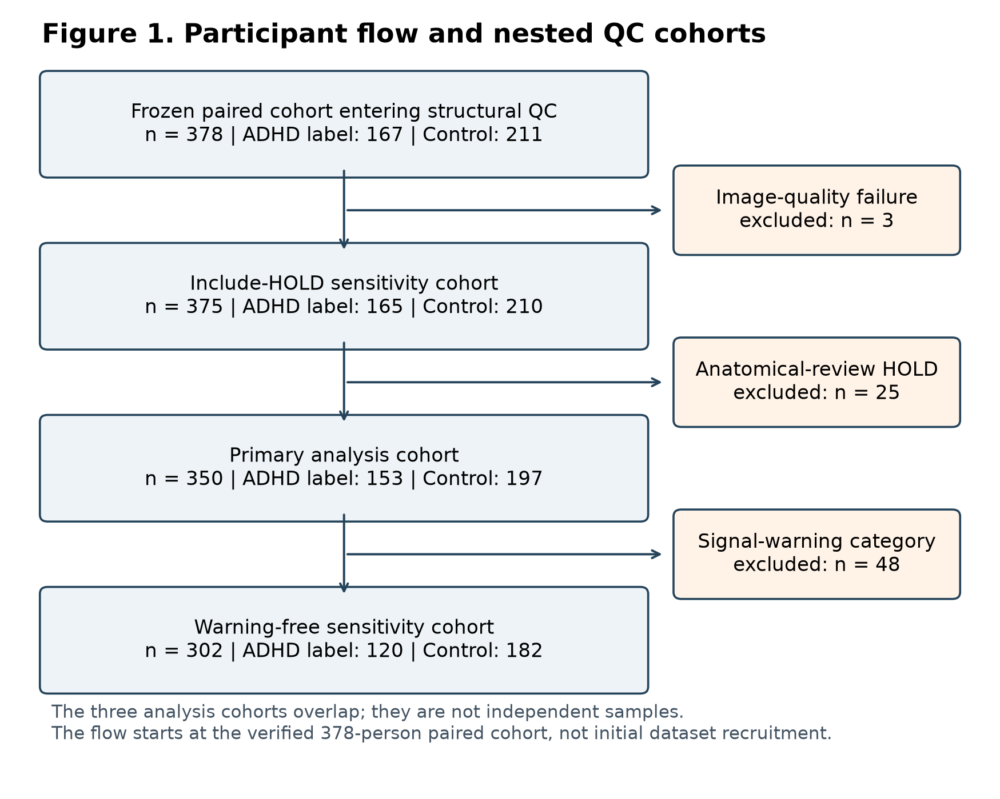
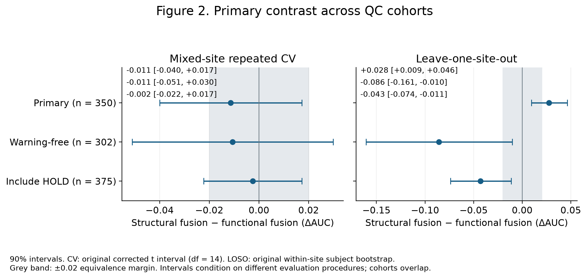
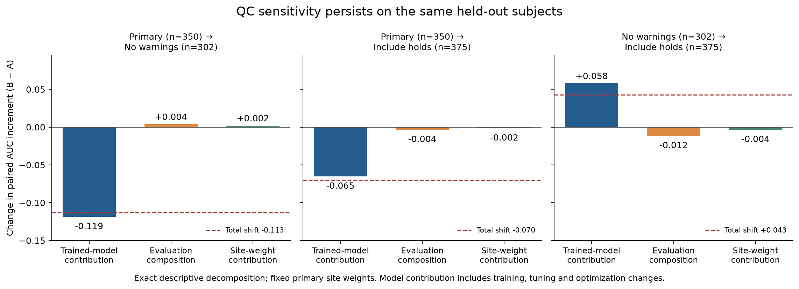
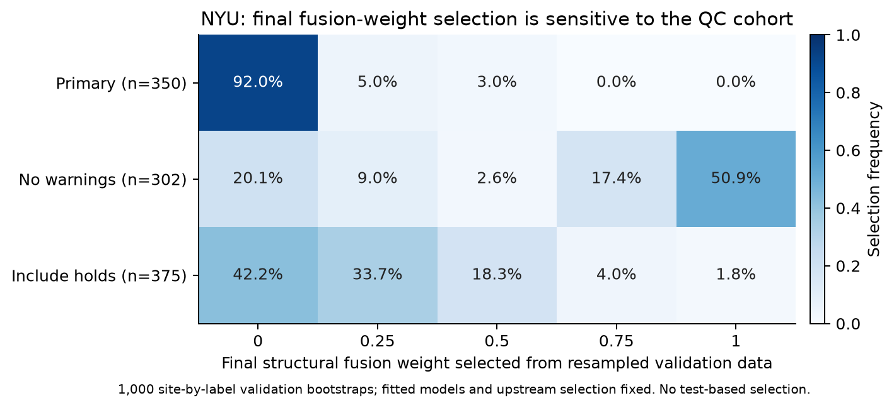
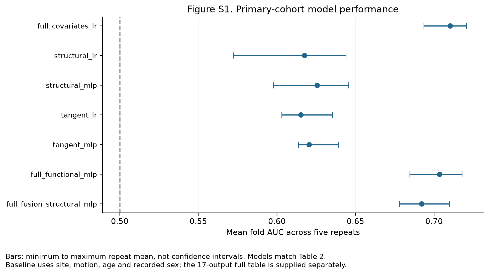
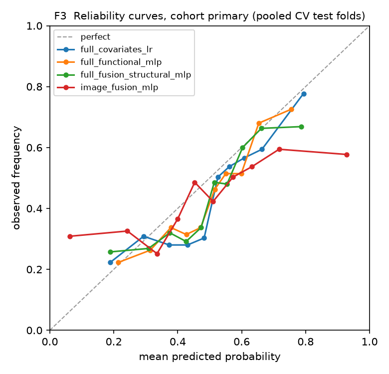
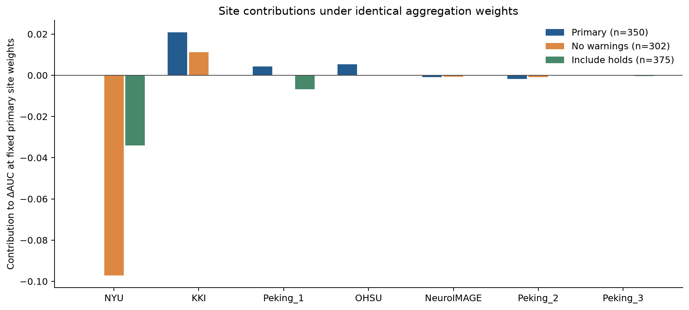
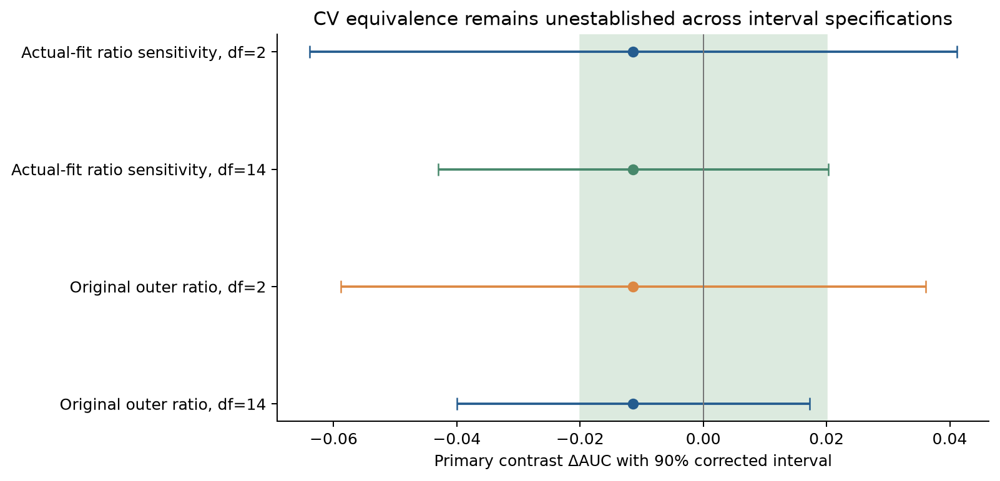
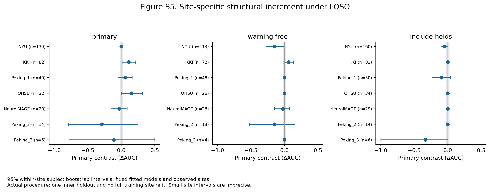

2026-09-14 · 研究分析用 · 冻结结果整理
4 张主表 + 10 张补充表；4 张主图 + 5 张补充图。CSV 可编辑，图可下载 PNG，具备矢量版本者附 PDF。
Table 1 口径：连续变量为填补前统计；missing 为缺失人数。百分比分母为列内人数。三个 QC 队列重叠。头动阈值比例已转为百分比，TIV 已由 mm³ 转为 mL。
| Characteristic | All | Control (label 0) | ADHD (label 1) |
|---|---|---|---|
| Participants, n | 350 | 197 | 153 |
| Recorded male sex, n (%) | 213 (60.9%) | 97 (49.2%) | 116 (75.8%) |
| Recorded female sex, n (%) | 137 (39.1%) | 100 (50.8%) | 37 (24.2%) |
| Age (years), mean (SD) | 11.34 (2.87); missing 0 | 11.36 (2.85); missing 0 | 11.31 (2.91); missing 0 |
| Age (years), median [Q1, Q3] | 10.81 [9.17, 12.79]; missing 0 | 10.82 [9.25, 12.77]; missing 0 | 10.78 [9.17, 12.79]; missing 0 |
| Mean FD (metadata scale), median [Q1, Q3] | 0.129 [0.096, 0.188]; missing 3 | 0.115 [0.090, 0.164]; missing 2 | 0.152 [0.102, 0.203]; missing 1 |
| Frames with FD > 0.2 (%), median [Q1, Q3] | 13.7 [5.2, 28.6]; missing 3 | 10.0 [4.6, 21.2]; missing 2 | 18.5 [7.9, 33.6]; missing 1 |
| Mean DVARS (metadata scale), median [Q1, Q3] | 1.111 [1.063, 1.177]; missing 3 | 1.117 [1.073, 1.197]; missing 2 | 1.102 [1.055, 1.162]; missing 1 |
| TIV (mL), mean (SD) | 1537.5 (134.4); missing 0 | 1533.7 (138.4); missing 0 | 1542.4 (129.2); missing 0 |
| KKI, n (%) | 82 (23.4%) | 60 (30.5%) | 22 (14.4%) |
| NYU, n (%) | 139 (39.7%) | 62 (31.5%) | 77 (50.3%) |
| NeuroIMAGE, n (%) | 28 (8.0%) | 15 (7.6%) | 13 (8.5%) |
| OHSU, n (%) | 32 (9.1%) | 19 (9.6%) | 13 (8.5%) |
| Peking_1, n (%) | 49 (14.0%) | 33 (16.8%) | 16 (10.5%) |
| Peking_2, n (%) | 14 (4.0%) | 5 (2.5%) | 9 (5.9%) |
| Peking_3, n (%) | 6 (1.7%) | 3 (1.5%) | 3 (2.0%) |
| Model | CV mean fold AUC | LOSO within-site pair-weighted AUC | LOSO equal-site macro AUC |
|---|---|---|---|
| full_covariates_lr | 0.7103 | 0.6706 | 0.7109 |
| structural_lr | 0.6176 | 0.5986 | 0.5680 |
| structural_mlp | 0.6256 | 0.5704 | 0.5755 |
| tangent_lr | 0.6152 | 0.6285 | 0.5558 |
| tangent_mlp | 0.6205 | 0.6418 | 0.6021 |
| full_functional_mlp | 0.7035 | 0.6832 | 0.6807 |
| full_fusion_structural_mlp | 0.6921 | 0.7107 | 0.6653 |
| Framework | Cohort | Delta AUC | 90% interval | Uncertainty method |
|---|---|---|---|---|
| CV | primary | -0.0114 | [-0.0400, +0.0172] | Original corrected t interval; df=14 |
| CV | warning_free | -0.0106 | [-0.0511, +0.0299] | Original corrected t interval; df=14 |
| CV | include_holds | -0.0025 | [-0.0222, +0.0173] | Original corrected t interval; df=14 |
| LOSO | primary | +0.0275 | [+0.0095, +0.0463] | Original within-site subject bootstrap; 10000 draws |
| LOSO | warning_free | -0.0857 | [-0.1607, -0.0103] | Original within-site subject bootstrap; 10000 draws |
| LOSO | include_holds | -0.0429 | [-0.0739, -0.0113] | Original within-site subject bootstrap; 10000 draws |
| cohort_a | cohort_b | common_n | native_a | native_b | common_fixed_a | common_fixed_b | weight_shift | total_native_shift | total_shift | common_subject_model_shift | evaluation_composition_shift | identity_residual | three_component_residual |
|---|---|---|---|---|---|---|---|---|---|---|---|---|---|
| primary | warning_free | 302 | 0.0275358246698511 | -0.08565004088307449 | 0.031330554691586396 | -0.08756342303831464 | 0.0019133821552401592 | -0.11318586555292559 | -0.11509924770816574 | -0.11889397772990104 | 0.0037947300217352972 | 6.938893903907228e-18 | 0.0 |
| primary | include_holds | 350 | 0.0275358246698511 | -0.04292091106787217 | 0.0275358246698511 | -0.0377915144703568 | -0.0015964565412831186 | -0.07045673573772326 | -0.06886027919644015 | -0.0653273391402079 | -0.0035329400562322533 | 0.0 | 0.0 |
| warning_free | include_holds | 302 | -0.08565004088307449 | -0.04292091106787217 | -0.08756342303831464 | -0.029671079255179054 | -0.003509838696523278 | 0.04272912981520231 | 0.04623896851172559 | 0.05789234378313559 | -0.01165337527141 | 0.0 | 0.0 |








